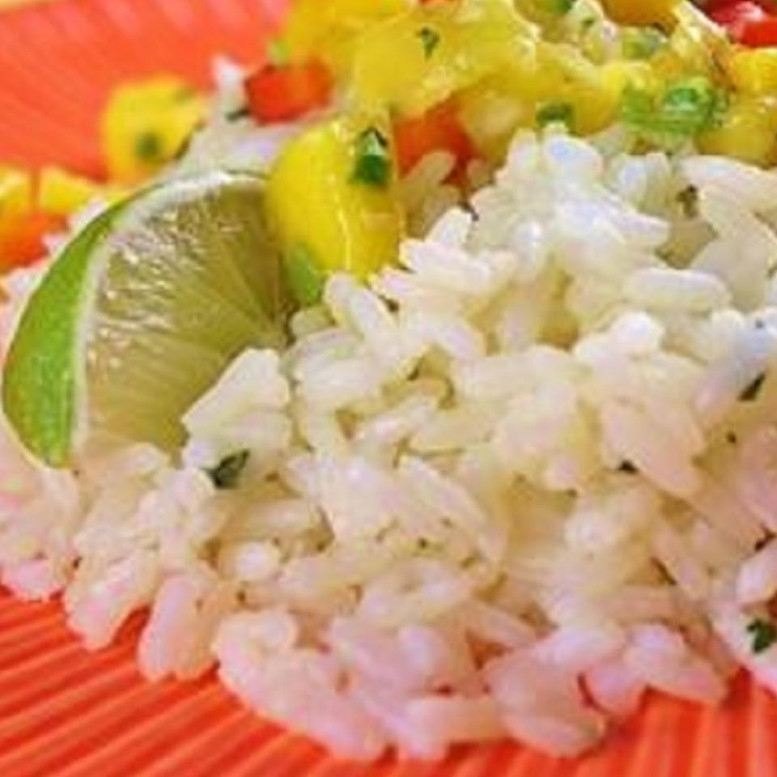

Cilantro-Lime Rice
Very similar to the rice of a famous burrito place, this rice pairs well with Mexican food and can be used as a filler in burritos.
Ingredients
- 1 cup long grain white rice
- 2 cups water
- 1 teaspoon chicken bouillon granules
- 2 tablespoons fresh lime juice
- 2 tablespoons chopped fresh cilantro
- salt to taste
Steps
- Bring the rice, water, and chicken bouillon to a boil in a saucepan over high heat. Reduce heat to medium-low, cover, and simmer until the rice is tender, 20 to 25 minutes. Remove from the heat, add the lime juice, cilantro, and salt; fluff with a fork and serve.